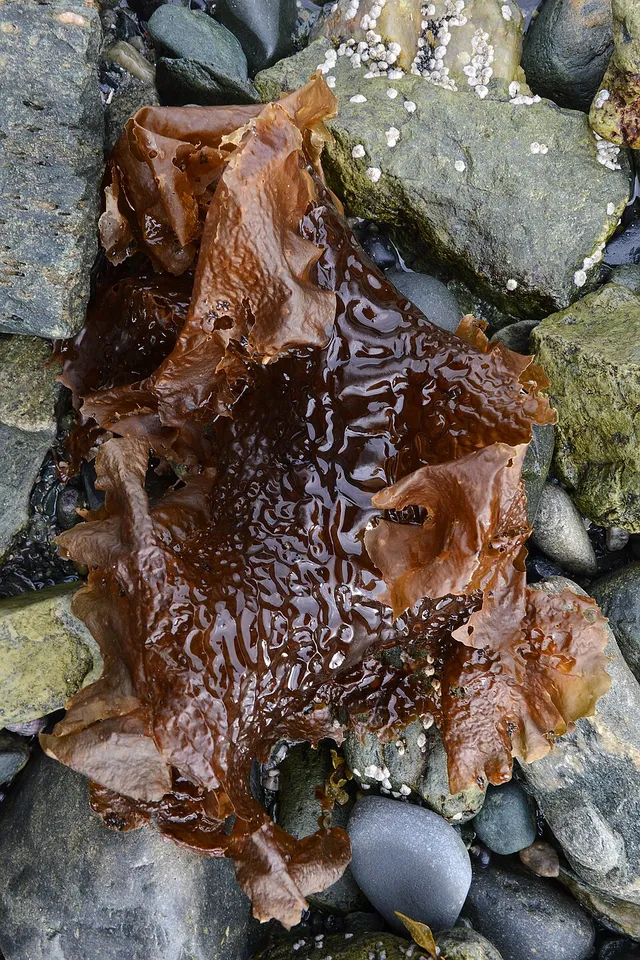

Sugar kelp
Sugar kelp is a wild green you can forage from March to June in Northeast, Pacific Northwest and Alaska. Long, wavy-edged golden-brown blade on the lowest shore, with a sweet white bloom when dried.

When is sugar kelp in season in the United States?
Sugar kelp is usually in season March to June. Timing shifts with weather, latitude and altitude.
Where does sugar kelp grow in the United States?
Sugar kelp grows in Alaska, Connecticut, Delaware, District of Columbia, Idaho, Maine, Maryland, Massachusetts, New Hampshire, New Jersey, New York, Oregon, Pennsylvania, Rhode Island, Vermont, Virginia, Washington, West Virginia. Regions: Northeast, Pacific Northwest, Alaska.
How do you recognise sugar kelp?
Long, wavy-edged golden-brown blade on the lowest shore, with a sweet white bloom when dried.
How do you harvest sugar kelp?
Cut the blade above the stipe at spring low tides, never pulling up the holdfast.
How do you eat sugar kelp?
Kelp crisps, dashi, salads.
How do you store sugar kelp?
Dry.
What is sugar kelp good for?
Iron & calcium.